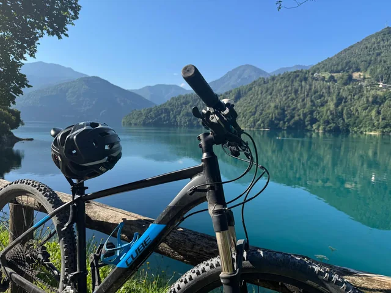
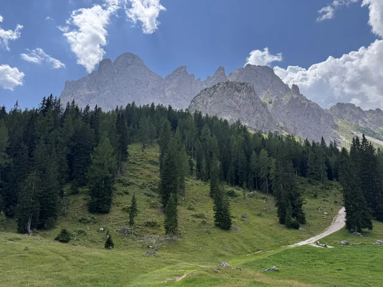
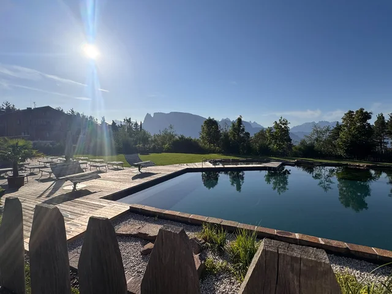

Marke & Strategie
Marketingstrategien aus Unternehmenszielen ableiten. Zielgruppen, Positionierung und Maßnahmen für den Marktauftritt festlegen.
JENS OLBRICH · REGION KÖLN / BONN
Ich entwickle Marketingstrategien und setze sie gemeinsam mit Teams, Agenturen und Fachbereichen um. Dafür bringe ich über 15 Jahre Erfahrung mit, zuletzt als Team Lead E-Commerce Marketing bei der REWE Group.
01 / PROFIL
Mein Weg führt vom digitalen Vermarktungs- und Key Account Management über Marketingprojekte bei REWE digital bis zur Teamleitung im E-Commerce Marketing der REWE Group.
In über 15 Jahren habe ich Marketing aus unterschiedlichen Perspektiven kennengelernt: in der Kundenberatung, in der Kampagnenplanung und in der Führung eines Teams. Mich motiviert, aus einer klaren Strategie konkrete Maßnahmen zu entwickeln und gemeinsam zu sehen, was sie bewirken.
Dabei sind mir klare Absprachen, gegenseitiger Respekt und die Bereitschaft wichtig, Entscheidungen anhand von Ergebnissen zu hinterfragen. Mit meiner aktuellen Weiterbildung zum KI-Manager ergänze ich diese Erfahrung um neue Werkzeuge für Marketing und Zusammenarbeit.
02 / SCHWERPUNKTE
Marketingstrategie, Umsetzung,
Teamführung und KI.
Marketingstrategien aus Unternehmenszielen ableiten. Zielgruppen, Positionierung und Maßnahmen für den Marktauftritt festlegen.
Maßnahmen zur Kundengewinnung und Conversion planen. Kanäle anhand von Kennzahlen bewerten und Kampagnen durch Tests verbessern.
Teams führen, Aufgaben und Verantwortlichkeiten klären. Die Zusammenarbeit mit Agenturen und anderen Fachbereichen koordinieren.
Aktuell erweitere ich meine Kenntnisse in KI-Agenten und automatisierten Workflows. Im Mittelpunkt steht der praktische Einsatz in Marketingprozessen.
03 / ERFAHRUNG
Verantwortung für die kanalübergreifende Marketing- und Mediastrategie des REWE Lieferservice im B2C- und B2B-Umfeld.
Konzeption und Steuerung crossmedialer Kampagnen. Zusammenarbeit mit E-Commerce, Brand-, CRM- und Performance-Marketing sowie KPI-basierte Weiterentwicklung des Marketingmix.
Steuerung digitaler Marketing- und E-Commerce-Projekte für Eigenmarken, Retail-Kooperationen und übergreifende Kampagnen. Abstimmung zwischen Fachbereichen und externen Partnern.
Betreuung strategischer Digital-Marketing-Kampagnen. Beratung, Kampagnenplanung, Umsetzung und Reporting in Zusammenarbeit mit internen Teams und Dienstleistern.
Kommunikation für Sales und Kooperationen sowie Steuerung von Sales- und Performance-Marketing-Kampagnen. Zusammenarbeit mit IP Deutschland.
Betreuung von Key Accounts und Steuerung digitaler Vermarktungskampagnen.
Entwicklung und Umsetzung von Kommunikations- und Produktkampagnen für B2B-Kunden. Organisation und Durchführung von Kundenevents.
Praktikum und Abschlussarbeit im Projekt Packstation. Mitarbeit am deutschlandweiten Roll-out und im Kooperationsmarketing.
Erstellung von Marketing- und Kommunikationsmaßnahmen sowie Mitarbeit bei internen und öffentlichen Veranstaltungen.
09/2003 – 05/2008
Studium · Fachhochschule Bonn-Rhein-Sieg
08/2000 – 01/2003
Ausbildung zum Industriekaufmann · rhenag
04 / ZUSAMMENARBEIT
Ziele, Kundenbedürfnisse und Ausgangslage klären.
Prioritäten, Maßnahmen und Verantwortlichkeiten gemeinsam festlegen.
Aufgaben koordinieren und die Umsetzung mit den Beteiligten abstimmen.
Ergebnisse prüfen und Maßnahmen auf Basis der Erkenntnisse anpassen.
05 / PERSÖNLICH
In meiner Freizeit bin ich gerne draußen: auf Bergtouren, beim Skifahren oder mit dem Mountainbike. Dazu kommen Camping, Tennis und Kochen.



KONTAKT
Du möchtest eine Rolle oder ein Marketingprojekt besprechen?
Schreib mir per E-Mail oder über LinkedIn. Das Formular unten ist eine technische Demo für meine Fortbildung.